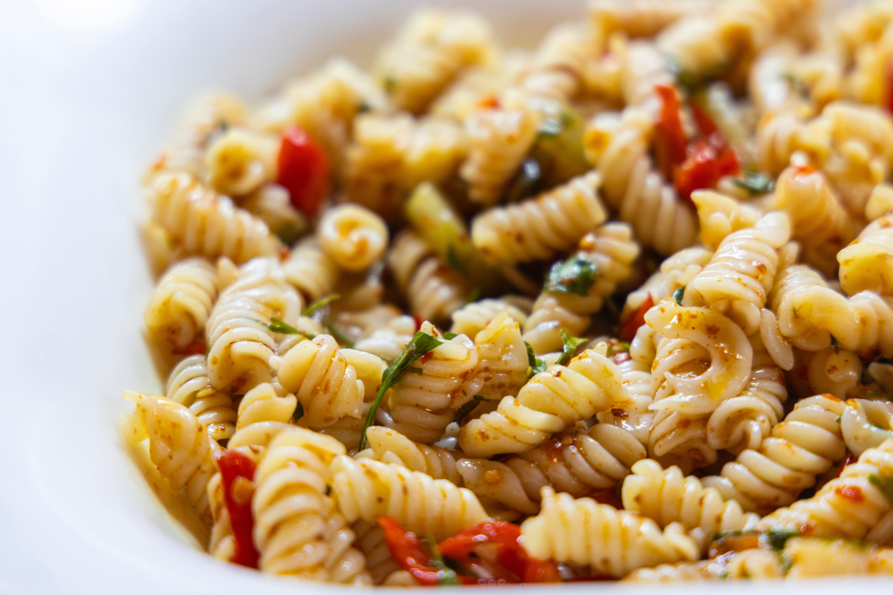

Pasta salad

Description
Did you realize you can eat pasta even if they are cold? Isn't that awesome? Now you can eat pasta
the whole day. And who wouldn't want to do this? I would. You should.
With this guide you learn how to create an eas... I mean the best pasta salad there is. Follow along And
experience the phenomenal beauty of pasta - a food you can enjoy independent of space and time.
Ingredients
- paprika (3 pieces)
- onions (3 pieces)
- corn (1 can)
- peas (1 can)
- pickled cucumbers (1 glass)
- mozarella (250 g)
- pasta (1 kg)
- salad cream
- seasoning
Steps
- Bring water to boil and start cooking the pasta.
- Cut the onions and start frying half of it in a frying pan.
- Chop the vegtables iand the mozarella nto small pieces.
- When everything is ready mix everything.
- Add salad cream and seasoning until it tastes good./li>
- Enjoy!
Home